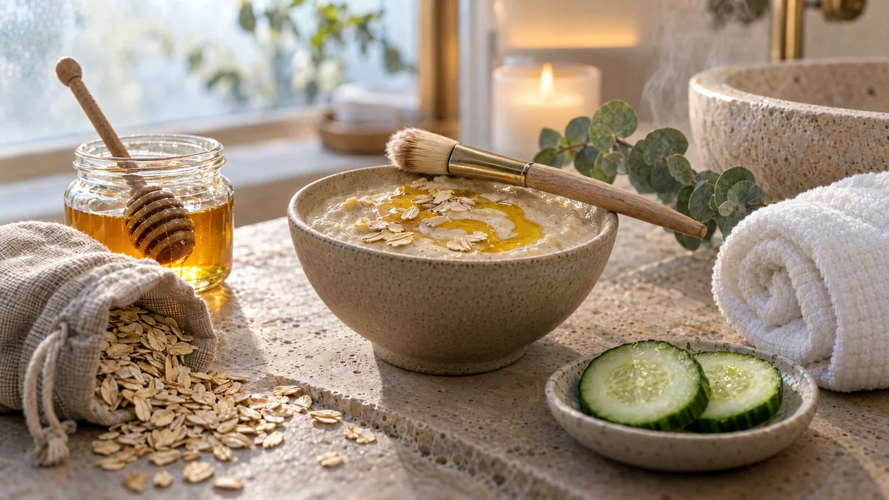

RESTFEST · HEMMASPA
Lugnande havremask med honung och yoghurt
Havregryn, en sked honung och en klick yoghurt rörs ihop till en mjuk, krämig mask som lugnar och återfuktar huden. Den serveras i en liten keramikskål med en pensel och en varm, rullad handduk. Som en ansiktsbehandling på ett lyxigt spa, med det du redan har i skafferiet.
- Förberedelse
- 5 min
- Verkningstid
- 15 min
- Räcker till
- 1 behandling
- Nivå
- Nybörjare
 Det här behöver du
Det här behöver du
Tryck på + vid det du behöver köpa.
Gör så här
- Mal havregrynen till ett fint mjöl i en mixer, kaffekvarn eller mortel. Fint mjöl gör masken krämigare och lättare att skölja av.
- Rör ihop havremjölet med det varma vattnet och låt det svälla i 2–3 minuter.
- Rör ner honung och yoghurt till en jämn kräm.
- Tvätta ansiktet. Lägg en varm, fuktig handduk över ansiktet i en minut, så att huden blir mjuk och mottaglig.
- Stryk masken i ett jämnt lager över ansiktet med en ren pensel eller fingrarna. Undvik området runt ögonen.
- Luta dig tillbaka och låt masken verka i 15 minuter.
- Skölj av med ljummet vatten och massera samtidigt med små cirkulära rörelser, så att havren fungerar som en mild peeling. Klappa torrt och avsluta med ansiktskräm.
Presentation och användning
- Blanda masken i en liten keramikskål och ställ den på en bricka med en mjuk pensel bredvid.
- Fukta en tvättlapp, rulla ihop den och värm den 20–30 sekunder i mikron. Känn på den innan du använder den, den kan bli het.
- Tänd ett ljus, lägg kalla gurkskivor över ögonen och sätt på lugn musik.
- Passar fint som en del av en spakväll med vänner, en skål var.
Bra att veta
- Gör ett lapptest först om du har känslig hud.
- Använd inte masken om du är allergisk mot havre, honung eller mjölkprotein, eller på irriterad eller trasig hud.
- Gör masken precis innan du ska använda den, den håller sig inte.